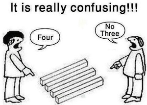
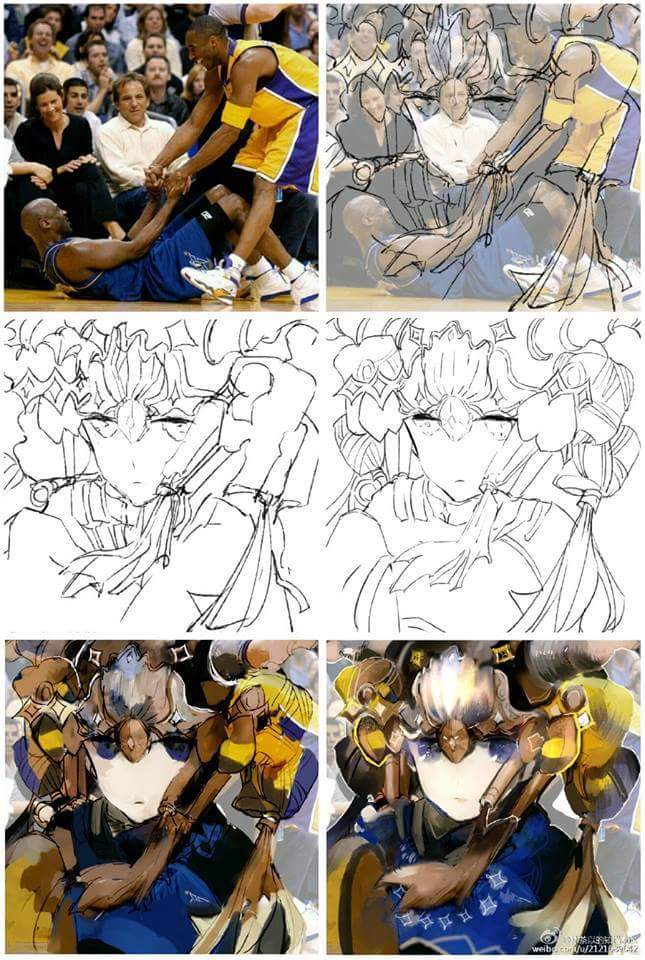
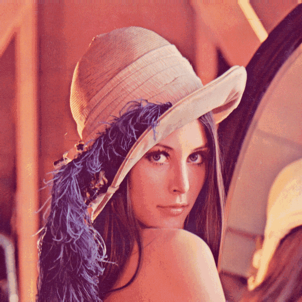
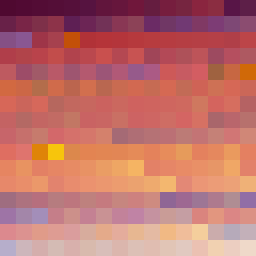
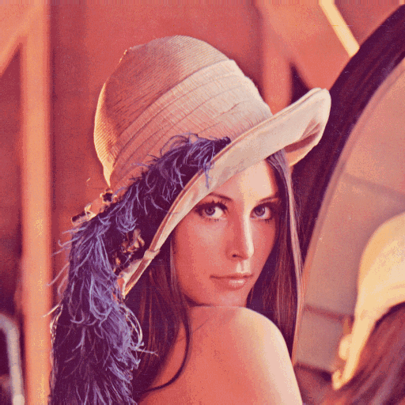
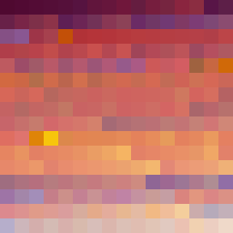

簡介

圖片的特殊武器：Pyramid
人眼有著觀（失焦、視野廣）看（對焦、視野窄）的差別。由觀到看、由看到觀的過程當中，人腦似乎能夠快速擷取圖片特點。
一種模擬的方式是：圖片分別套用各種寬度的mean filter。換句話說：圖片縮放成各種尺寸，套用相同寬度的mean filter。
mean pyramid：圖片長寬屢次縮小一半，得到許多張圖片，形成金字塔。縮小時，每四個像素合併成一個像素（田變口），取平均值。此步驟即mean filter，具有模糊化效果，彷彿人眼失焦。
Gaussian pyramid：縮小時改採Gaussian filter，消滅邊緣。
Laplacian pyramid：縮小時改採Laplacian filter，強調邊緣。
圖片的特殊武器：Blob
針對人類視覺系統的特性，擷取圖片引人注目的地方。
Laplacian of Gaussian filter (LoG filter)：先做Gaussian filter，再做Laplacian filter。先去噪，再求邊緣，效果更佳。
difference of Gaussian filter (DoG filter)：LoG filter的高速近似算法。兩個Gaussian filter，平均值相同、變異數為0.3和1.0，相減之後恰好近似Laplacian filter。
Laplacian of Gaussians (LoG)：圖片套用各種寬度（變異數）的LoG filter。針對一種寬度，找到區域極大值，推定為圖片重點，重點的半徑範圍是LoG filter的變異數。
difference of Gaussians (DoG)：LoG的高速近似算法。改為套用各種寬度的DoG filter。換句話說，圖片縮放成各種尺寸，套用同樣寬度的DoG filter。換句話說，Gaussian pyramid，從中選擇尺寸足夠大的圖片來縮小（因為放大會失真），以得到各種尺寸的圖片；寬度最接近的兩兩圖片，直接相減。【尚待確認：直接相減】
圖片的特殊武器：橢圓形Blob
引人注目的地方，莫名其妙是圓形。由於尺寸、形狀皆不夠精準，所以調整成橢圓形。不過還是很莫名其妙。
automatic scale selection：調整blob尺寸。一、找到一個blob之後，微調blob尺寸。二、計算blob裡面（或者周圍）所有像素的梯度的長度的平均值。三、平均值依照blob尺寸排列，形成一串數列。四、區域極大值所在之處，表示梯度變化最大，推定為正確尺寸。當區域極大值不只一個，推定blob不存在。
高速近似算法：一、各種寬度的blob，改成各種尺寸的圖片（實務：邊長屢乘0.7倍）。二、微調blob尺寸，改為尺寸相鄰的兩張圖片的線性內插（實務：微調範圍是該圖的0.7至1.4倍，自行設定間距）。三、統計blob內部的梯度平均值，改為擷取blob中心的DoG值。四、簡單一句話歸納：長、寬、縮放尺寸，在三維空間中求得DoG區域最小值。
affine shape adaptation：調整blob形狀。取得blob內的像素，求得二次動差矩陣總和，實施特徵分解，得到橢圓形，設為新blob。重複上述動作，直至blob形狀不變。
另類觀點：取得blob內的像素。一個像素的X梯度、Y梯度，視作一個二維座標點；所有像素的X梯度、Y梯度，視作一群二維座標點。計算principal component analysis（不必預先減去平均值），得到橢圓形。
Ix(x,y) = I(x,y) - I(x-1,y) = x gradient at (x,y)
Iy(x,y) = I(x,y) - I(x,y-1) = y gradient at (x,y)
P = [ Ix(x,y) Ix(x,y+1) Ix(x,y+2) ... Ix(x+1,y) Ix(x+1,y+1) ... ]
[ Iy(x,y) Iy(x,y+1) Iy(x,y+2) ... Iy(x+1,y) Iy(x+1,y+1) ... ]
PᵀP = [ ∑IxIx ∑IyIx ] = ∑C(x,y)
[ ∑IxIy ∑IyIy ]
C(x,y) = [ IxIx IyIx ] = second monent matrix = structure tensor
[ IxIy IyIy ]
Image Feature Detection
特徵偵測。找到圖片所含有的特殊結構、邊邊角角。
Hessian keypoint detection：偵測頂點、端點、臨界點。一、求每個像素的det(Hessian matrix)。二、由於綜合了X梯度與Y梯度，因此數值偏高者，多半為頂點、端點、臨界點。
I(x,y) = R/G/B pixel value at (x,y)
Ix(x,y) = I(x,y) - I(x-1,y) = x gradient at (x,y)
Iy(x,y) = I(x,y) - I(x,y-1) = y gradient at (x,y)
Ixy(x,y) = Ix(x,y) - Ix(x,y-1)
= [I(x,y) - I(x-1,y)] - [I(x,y-1) - I(x-1,y-1)]
= y gradient of x gradient at (x,y)
∂I ∂²I
Ix = ―― Ixy = ――――― H = [ Ixx Iyx ] det(H) = Ixx Iyy - Ixy Iyx
∂x ∂x ∂y [ Ixy Iyy ] = Ixx Iyy - (Ixy)²
Harris corner detection：偵測角。一、擷取一塊區域，求梯度。二、套用窗函數Gaussian window，專注於區域中心附近的梯度。三、求得二次動差矩陣總和，實施特徵分解，以兩個特徵值的絕對值大小，判斷該區域是否有角。兩值都足夠大，就表示梯度們有兩個主要方向，就表示有兩條較直的邊緣，就表示有角。四、高速算法是改用det和trace來判斷。五、為何不採用independent component analysis，而是用principal component analysis？我也不知道。
Canny edge detection：偵測邊緣。一、平滑兼去噪：Gaussian filter。二、求邊緣：求得梯度長度、梯度方向。三、找到最明顯的邊緣：若梯度長度為區域極大值，則保留，否則設為零。區域極大值是依照梯度方向取得前後兩個像素，僅三個像素比較梯度長度。四、清除不明顯的邊緣：設定門檻，梯度長度太短者設為零。五、銜接邊緣。
Hough line transform：偵測直線，甚至偵測線段。一、求邊緣：求得梯度長度，設定門檻。二、針對一個像素(x,y)，窮舉穿過此像素的直線們，求得原點在直線上的投影點，再換成極座標表示法(r,θ)，一條直線對應一個點，直線們對應一條曲線r = xcosθ + ysinθ。一個像素得到一條曲線。三、圖片每個像素皆換成曲線。曲線們的交點，即是穿過大量像素的直線！四、建立細膩方格紙（離散化），曲線穿過方格，則投票加一，得票多的方格當作交點。五、轉換過程是三步驟：對偶、轉成極座標、投票。
Hough cycle transform：偵測圓。窮舉各種半徑。針對一個像素(x,y)，窮舉穿過此像素的所有圓；圓穿過像素，則投票加一，得票多的像素就是圓心。
UVa 12599
Image Feature Detection再進化
例如corner，只有位移不變、旋轉不變。現在還要縮放不變。方法是把corner補強為橢圓形blob。
Harris affine region detector：圖片縮放成各種尺寸，每張圖都找corner。每一個corner，以自己為中心，嘗試找橢圓形blob。
Hessian affine region detector：找corner改為找keypoint，其餘相同。
maximally stable extremal regions：
Kadir-Brady saliency detector：
Image Feature Description
特徵描述。將圖片獨特之處寫成數值，以供辨識比對。
histograms of oriented gradients (HOG)：一個像素進行投票，梯度長度是持票數，梯度角度（無視正反方向，僅0°到180°）決定投票箱編號。180°等分成9個箱子。一個像素投票給最鄰近的兩個箱子，與箱子中心的距離（角度差）做為投票比例。
圖片分解成大量16×16區域，交疊一半。一個區域256個像素實施投票，得到9個數字，RGB分開就是9×3個數字。一個區域的數字，依序串成一串，當作特徵描述。
scale-invariant feature transform (SIFT)：一個像素進行投票，梯度長度是持票數，梯度角度決定投票箱編號。360°等分成8個箱子。一個像素投票給一個箱子。
實施Harris affine region detector，得到大量區域。針對一個區域，切成4×4宮格，一個宮格所有像素實施投票，得到8個數字，所有宮格就是4×4×8=128個數字，RGB分開就是128×3個數字。一個區域的數字，依序串成一串，當作特徵描述。
speeded up robust features (SURF)：SIFT的高速算法。
BRIEF – Binary Robust Independent Elementary Features
BRISK – Binary Robust Invariant Scalable Keypoints
ORB – Oriented FAST and Rotated BRIEF
FREAK – Fast Retina Keypoint
Image Feature Matching
特徵匹配。兩張圖片，找到引人注目的地方，找到對應。
KNN Match
Radius Match
Flann Based Matcher
RANSAC
Image Object Detection
物體偵測。判斷圖片內容是否為預設物體。
Viola-Jones framework：最初用來偵測人臉。一、已知是何物的圖片，窮舉位置、範圍、窗函數（仿照Harr小波，此處使用四種），一種情況當做一個特徵，得到大量特徵。二、因此圖片必須尺寸一致、正面照、無留白，如此位置和範圍才對的上。三、一個特徵，求區域和，得到一個分數，當作特徵描述。區域和的高速算法是前綴和相減。四、實施classification，取得關鍵特徵，捨棄無效特徵。五、不知是何物的圖片，窮舉位置、區域，全部特徵都通過檢驗才視為正確。
integral channel features (ChnFtrs)：Viola-Jones framework豪華版，最初用來偵測行人。一、像素數值，除了灰階值以外，還可以是梯度方向的投票數（仿照HOG，此處使用六個箱子）、梯度長度、LUV值。二、窗函數，除了原本四種以外，還可以是簡單的矩形窗、自訂的零散的區域。三、區域和，還可以是histogram。
Image Object Recognition
物體辨識。判斷圖片內容是哪種物體。
Image Saliency Detection
重點偵測。針對人類視覺系統的特性，找到圖片引人注目的地方。引人注目的地方，不一定是與眾不同的地方。
Image Edge Grouping
邊緣整合。針對人類視覺系統的特性，將圖片邊緣銜接成區域。

Image Texture Description
紋理描述。將紋理獨特之處寫成數值，以供辨識比對。
local binary pattern：八個相鄰像素值，分別減去中央像素值，取其正負號，變成8-bit二進位數值。旋轉視為相同，剩下36種數值。圖片所有像素都實施此計算，統計每種數值的數量。
Image Shape Description
形狀描述。將形狀獨特之處寫成數值，以供辨識比對。平移旋轉後，數值需相同。
principal component analysis：憑感覺亂搞。座標軸不實用，中心則可用。
shape histogram：選定中心，同心圓、放射線。
spherical harmonics decomposition：選定中心，分解成球諧函數。
 
